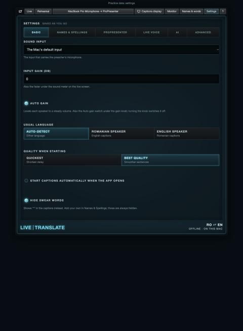
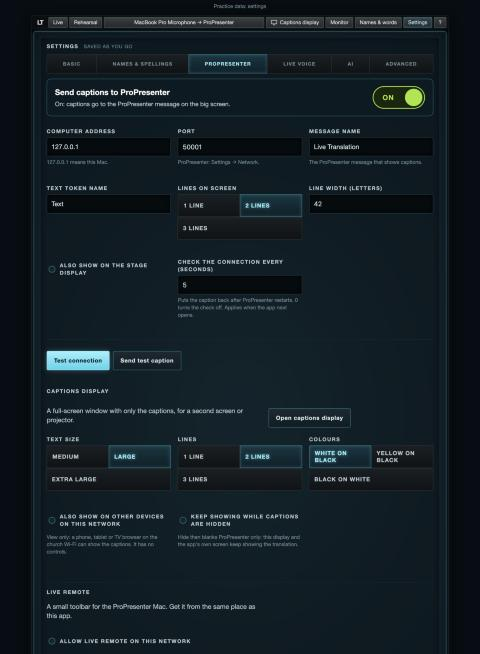
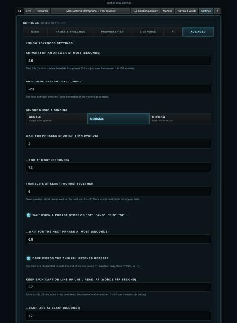
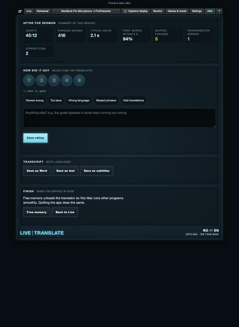

Left: the screen today (mock data). Right: the proposal. Static pictures of the layout, nothing here is wired.
1 · Settings → General (was Basic)
Before · 108 words · one block per setting

After · about 45 words · one row per setting
GeneralNames & wordsScreensLive VoiceAIAdvanced
SoundSound OK
Sound input
Auto gaini
When the app opens
Speaker
Auto-detectRomanianEnglish
Quality
QuickestBest
Start captions by itself
Open the app when the Mac starts
More optionsAuto gain target · Ignore music and singing
The level bar shows the chosen input is alive. The gain number appears only while Auto gain is off. "Hide swear words" moves to Names & words, next to your own hidden words.
2 · Settings → Screens (was ProPresenter)
Before · 226 words · 27 controls · 1420 px tall

After · three cards, connection details folded into one line
GeneralNames & wordsScreensLive VoiceAIAdvanced
ProPresenterConnected
Lines on the big screen
123
Check it works
Test connectionSend test caption
ConnectionThis Mac · port 50001 · message “Live Translation”
Captions displayOpen
Text size
MediumLargeExtra large
Lines
123
Colours
Show on other devicesOpen http://192.168.1.40:8765/display on the church Wi-Fi
More optionsKeep showing while hidden
Live Remote1 connected
PIN
482 913New PIN
With a switch off, its card shrinks to the header alone. A failed test shows the one fix under the buttons, as today.
3 · Settings → Advanced
Before · 321 words · 20 settings in one column · 2810 px tall

After · four groups, each closed with a summary; one shown open
GeneralNames & wordsScreensLive VoiceAIAdvanced
For whoever tunes the system. Nothing here is needed on a Sunday.
Caption pacing6 settings · 1 changed
Reading pacei
words / s
Shortest time per line
s
Speed up when behind by
✓ Saveds
Reveal words graduallyi
Reveal pace
words / s
Phrase building7 settings · all default
FiltersSkip garbled: Normal · Drop repeated words: on
System4 settings · all default
Reset Advanced to defaults
Units sit beside the number instead of in the label. "Time per line" is hidden because reading pace is not 0. Delay numbers, outcome counts and alerts move to Monitor.
4 · After the service
Before · seven numbers first, the rating second

After · what we ask of the operator first
How did it go?
12345
Save rating
Names wrongToo slowWrong languageMissed phrasesOdd translations+ Add a note
Transcript
Save to the Desktop
WordTextSubtitles
This service5 skipped · 1 ProPresenter error
45 min · 416 captions · typical delay 2.1 s
More numbersFirst words · corrections · AI and Local · Live Voice